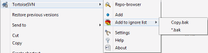
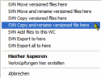

Windows Explorer Integration
Context menus in Windows Explorer
All commands are available through the context menu in the Windows Explorer. You can choose which entries TortoiseSVN should show in the top context menu and which it should put in the submenu.
The context menu for versioned folders shows the commands you can use on such folders.

The context menu for unversioned folders shows commands where you can either create working copies, or commands you can use with URLs.
{kind=link}
Not all commands which are available for versioned folders are also available for versioned files. Remember that Subversion is folder oriented unlike CVS which is more file oriented.
{kind=link}
The menu for unversioned files has very few entries.
{kind=link}
Since moving and copying files/folders always has to be done via the Subversion commands, TortoiseSVN helps here too by adding entries to the right-drag context menu (select a file/folder, right-drag it to another location and release the right mouse button):
{kind=link}
Icon overlays
Inside the Windows Explorer, TortoiseSVN shows you the state of the files with overlay icons. The following screenshot shows all available overlays, but usually you will only see a few of them.